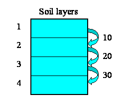
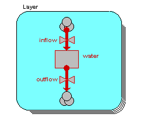
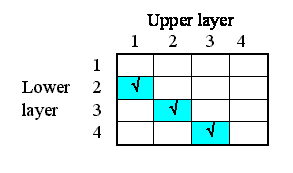
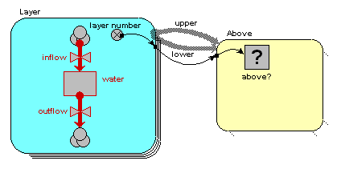
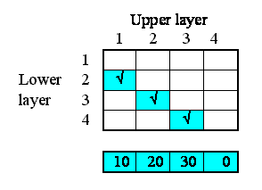
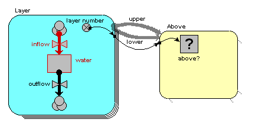
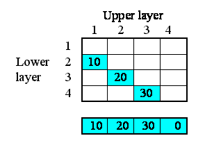
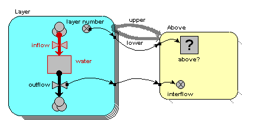
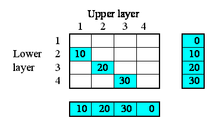
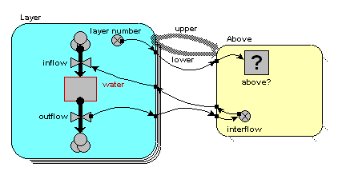

We want to model the movement of water between four soil layers. Each layer has a compartment representing the amount of water held in that layer. Water draining out of one layer will enter the layer immediately below it. The following diagram illustrates the system, with notional rates of 10, 20 and 30 units of water per unit of time flowing between the layers.
 
We begin by constructing a fixed-membership submodel to represent the four layers: each instance represents one layer. Each layer has a single compartment, for the amount of water in that layer. The compartment has a flow in, for the water flowing into it from the layer above, and a flow out, for the water flowing from that layer to the layer below. (There may well be other flows, but they are not relevant to the use of association submodels.) At this stage, we have not entered any values, so all the model elements are red.
Now, some of the elements have an association with each other — the relationship of one being immediately above the other.
But potentially there could be associations between each instance and all the other instances. In other words, the relationships that we have, in this particular system, are a subset of all the 4x4 relationships that potentially could exist. We can represent this in a matrix (below), with as many rows and columns as we have instances in our submodel.
The ticks show when the relationship of being next to exists between an upper layer and a lower layer. Note that, in this particular problem, the relationship is not symmetrical: layer 1 is above layer 2, and not the other way around. In some cases, the relationship could be symmetrical (like neighbourliness in a spatial grid), but not here.

We will now modify the model diagram to represent the fact that this relationship exists between layers.

Quite a lot has happened here, so I'll explain the changes one-by-one.
1. We have added in a new submodel, and called it “Above”. At this stage, it’s just like any other submodel. Think of this submodel as a container to represent things about the relationship that exists between soil layers. We have to do this outside the “Layer” submodel (because anything inside the “Layer” submodel relates to an individual layer); and it needs to be some sort of container, because there are potentially lots of things we can say about the relationship between pairs of objects.
1. We draw two role arrows, each one going from the “Layer” submodel to the “Above” submodel. Each arrow shows one partner in the association. They’re called role arrows because each one represents one role in the association. Here, we re-label them as “upper” and “lower”, to indicate that one partner plays the role of being higher, the other the role of being lower.
2. We add a condition model element, labelled “above?” to the association submodel — that's the one with the question-mark inside it in the diagram above. Every association submodel needs one of these, so that we can specify which of all the possible relations between the objects actually exists.
3. We add in a variable, here called “layer number”, in the “Layer”
submodel. The equation for this is
layer number = index(1)
so it has a value 1 for the first layer, 2 for the second layer, and so on.
4. We take an influence from “layer number” to the condition element. This is because Simile needs to know the layer number for each partner in the relationship in order to work out whether the relationship exists between any pair of layers. Once it knows that the “upper” partner has a layer number one greater than the “lower” one, then the relationship exists.
5. We enter the actual condition for the existence of the relationship
into the condition symbol. The
expression for this is:
above? = layer_number == layer_number_0 - 1
(i.e. we are checking that the variable with the local name “layer_number” is equal to the
value of the variable with the local name of “layer_number_0”, minus one.) Where do the two layer_number variables come
from? The answer is that they both come
from the single “layer number” symbol — but one is the value of layer number
for the upper layer, while the other is the value of layer number for the lower
layer.
We are now in a position to pass information between pairs of instances of the “Layer” submodel. In this case, we want to pass the value for the amount of water passing out of one layer to the layer below it.
We begin by specifying how much water flows out of each layer to the layer below. Here, I’ve assumed 10 units per unit of time from the first layer, 20 from the second, and so on. In this particular context, this value is a property of each layer: each layer calculates the flow out of it. This could be because the flow is related to the water content of that layer, for example. We show this as a set of value beneath each column, since the columns refer to the upper layer.

In terms of our model diagram, the fact that we have provided values for the four outflows simply means that the outflow arrow is now black:

Now, each of the first three of these outflows in fact constitutes an interflow between the two layers: i.e. it is a property of the relationship between the two layers. In our matrix, we can therefore enter the values in the boxes corresponding to the linkage between the upper and lower layers:

On the model diagram, we add a variable inside the “Above” submodel, here called “interflow”, and take an influence arrow to it from “outflow”. This shows that (in this particular model) the interflow is calculated from the each soil layer’s outflow.

Because we are inside the “Above” association submodel, we could (potentially) set interflow to the outflow from the upper layer or the outflow from the lower layer. The first has the local name “outflow” in the equation dialogue box, while the second has the local name “outflow_0”. In this particular model, we want it to be from the upper layer, so we select the variable
However, we know that the interflow between layers becomes the inflow for the lower layer. In our matrix, we show this fact by copying the interflow values across to the right, to the column representing the inflow into each layer.

In the model diagram, we draw an influence arrow from the “interflow” variable in the “Above” submodel to the “inflow” variable in the “Layer” submodel.

When we look inside the equation dialogue window for inflow, we get a bit of a surprise. We expect to see interflow as an influencing variable, but:
It’s offered twice, because we could (potentially) be interested in the interflow values relating to the upper layer (those under the columns in the matrix above); or the interflows relating to the lower layer (the interflows to the right of the rows in the matrix above). We want the latter, so we choose {interflow_0}.
Why is the information from the submodel a list rather than a scalar variable? Well, potentially there could be as many values as there are soil layers. In this particular case, we happen to have put in a condition that restricts it to one value for three of the layers, and none at all for one layer, so our list will contain only zero or one value, depending on the layer. But if we had allowed water to flow directly from a layer to any layer below it, then the list could contain several values.
Anyway, the fact that it’s in a list means that we have to extract a single value by summing up the elements of this list. So the actual equation we use for inflow is:
inflow = sum{interflow_0})
In: Contents >> Working
with submodels >> Association submodels